Installeren & de interfaceInstaller & l'interfaceInstall & the interface
Na deze les heb je FreeCAD 1.1.1 draaiend, herken je de drie werkzones, kun je vlot in 3D navigeren, en weet je wat een Body is.À la fin de cette leçon, FreeCAD 1.1.1 tourne, vous reconnaissez les trois zones de travail, vous naviguez aisément en 3D et vous savez ce qu'est un Body (corps).After this lesson FreeCAD 1.1.1 is running, you recognise the three work areas, you can navigate 3D smoothly, and you know what a Body is.
1 · FreeCAD ophalen en eerste opstart1 · Télécharger & premier lancement1 · Get FreeCAD & first run
- Ga naar de officiële site freecad.org en download versie 1.1.1 voor jouw besturingssysteem (Windows, macOS of Linux).Allez sur le site officiel freecad.org et téléchargez la version 1.1.1 pour votre système (Windows, macOS ou Linux).Go to the official site freecad.org and download version 1.1.1 for your operating system (Windows, macOS or Linux).
- Installeer en start FreeCAD. Bij de eerste opstart verschijnt het welkomstscherm waar je taal, eenhedenstelsel, navigatiestijl en thema kiest. Bevestig met Done.Installez et lancez FreeCAD. Au premier lancement, l'écran de bienvenue apparaît : choisissez la langue, le système d'unités, le style de navigation et le thème. Validez avec Done.Install and launch FreeCAD. On first run the welcome screen appears where you choose language, unit system, navigation style and theme. Confirm with Done.
- Zie je dat scherm niet? Klik op de startpagina op Open first start setup, of ga naar Help ▸ Start page.Vous ne voyez pas cet écran ? Cliquez sur Open first start setup sur la page de démarrage, ou allez dans Help ▸ Start page.Don't see that screen? Click Open first start setup on the start page, or go to Help ▸ Start page.
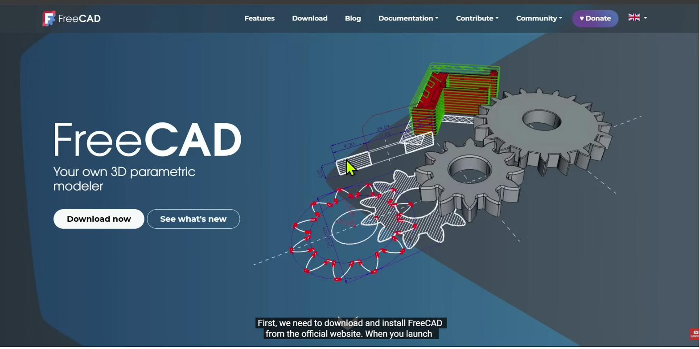
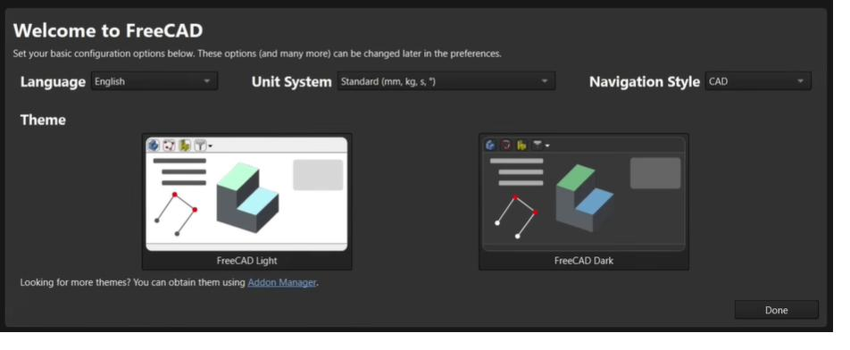
2 · Twee panelen, rust in beeld2 · Deux panneaux, un écran épuré2 · Two panels, a calm screen
- Maak een nieuw document en kies bovenaan de workbench Part Design.Créez un nouveau document et choisissez en haut l'atelier Part Design.Create a new document and pick the Part Design workbench at the top.
- Centraal zit de 3D-view, links het Model-paneel (de boom), en het Task-paneel voor lopende bewerkingen. Ontbreekt Task? View ▸ Panels ▸ Tasks.Au centre la vue 3D, à gauche le panneau Model (l'arbre) et le panneau Task pour les opérations en cours. Task absent ? View ▸ Panels ▸ Tasks.The 3D view is central, the Model panel (the tree) is on the left, and the Task panel holds ongoing operations. Task missing? View ▸ Panels ▸ Tasks.
- Schakel het Report view uit zodat het niet steeds opduikt: Edit ▸ Preferences ▸ General en vink Show on error én Show on warning uit. Meldingen blijf je in de statusbalk zien.Désactivez le Report view pour qu'il ne resurgisse pas : Edit ▸ Preferences ▸ General et décochez Show on error et Show on warning. Les messages restent visibles dans la barre d'état.Turn off the Report view so it stops popping up: Edit ▸ Preferences ▸ General and uncheck Show on error and Show on warning. You still see messages in the status bar.
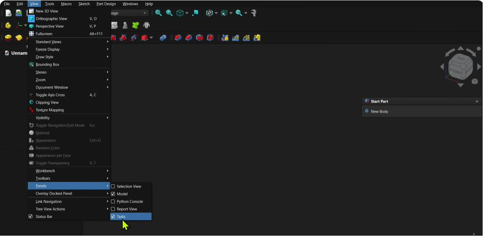
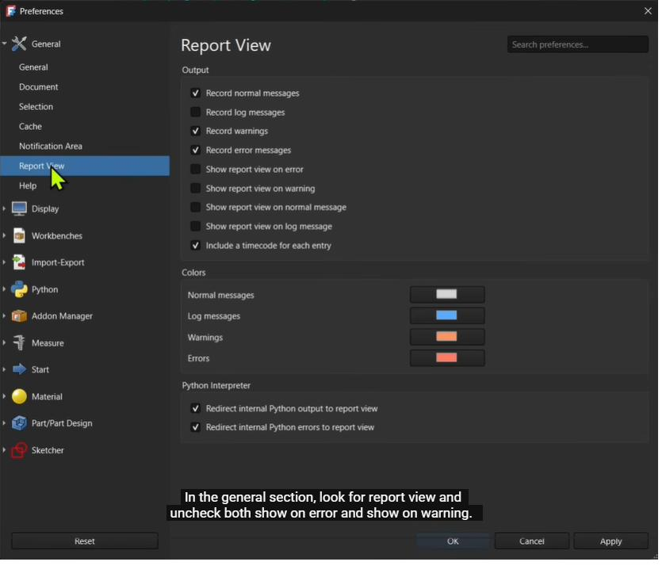
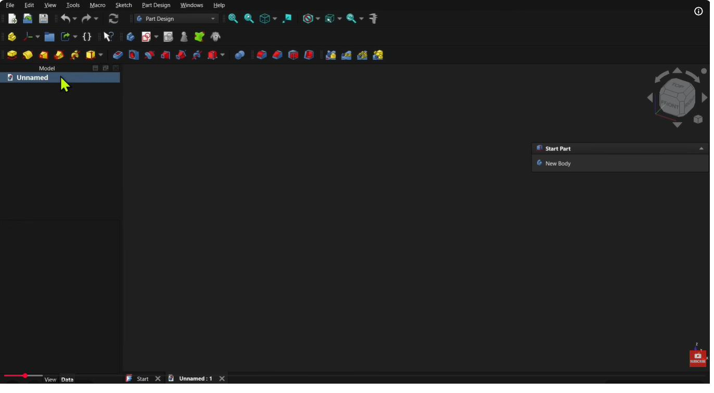
3 · Navigeren in 3D3 · Naviguer en 3D3 · Navigate in 3D
- Zet het as-kruis aan via View ▸ Toggle axis cross — zo zie je de oorsprong en de richtingen.Activez le repère d'axes via View ▸ Toggle axis cross — vous voyez ainsi l'origine et les directions.Turn on the axis cross via View ▸ Toggle axis cross — it shows the origin and directions.
- Vergeet je de bediening? Hover over de navigatiestijl-knop rechtsonder: de volledige lijst zoom/roteer/pan verschijnt.Vous oubliez les commandes ? Survolez le bouton de style de navigation en bas à droite : la liste zoom/rotation/translation apparaît.Forget the controls? Hover over the navigation-style button at the bottom right: the full zoom/orbit/pan list appears.
- Rechtsboven draait de navigatiekubus mee. Klik op een zijde (Top, Front, Right…) om recht op dat aanzicht te springen.En haut à droite, le cube de navigation tourne avec vous. Cliquez sur une face (Top, Front, Right…) pour passer à cette vue.Top right, the navigation cube turns with you. Click a face (Top, Front, Right…) to jump to that view.
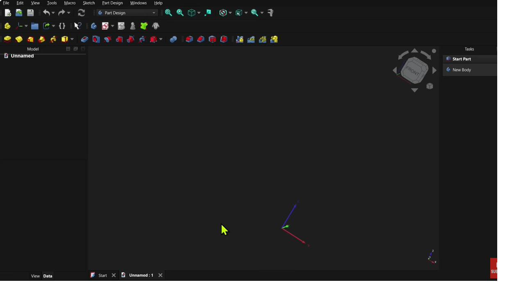
4 · De Body: je container4 · Le Body : votre conteneur4 · The Body: your container
- Klik op het Body-icoon in de werkbalk. In de boom verschijnt een Body; staat hij vet, dan is hij actief en landen alle bewerkingen erin.Cliquez sur l'icône Body dans la barre d'outils. Un Body apparaît dans l'arbre ; s'il est en gras, il est actif et reçoit toutes les opérations.Click the Body icon in the toolbar. A Body appears in the tree; if it is bold it is active and all operations land in it.
- Niet vet? Dubbelklik de Body, of rechtsklik Active body.Pas en gras ? Double-cliquez le Body, ou clic droit Active body.Not bold? Double-click the Body, or right-click Active body.
- Klap de Body open: daarin zit de Origin met de drie basisvlakken (XY, XZ, YZ) en assen. Maak iets zichtbaar met het oog-icoon of door selecteren + spatie.Dépliez le Body : il contient l'Origin avec les trois plans de base (XY, XZ, YZ) et les axes. Rendez un élément visible avec l'icône œil ou en le sélectionnant + espace.Expand the Body: it holds the Origin with the three base planes (XY, XZ, YZ) and axes. Make something visible with the eye icon or by selecting it + space.
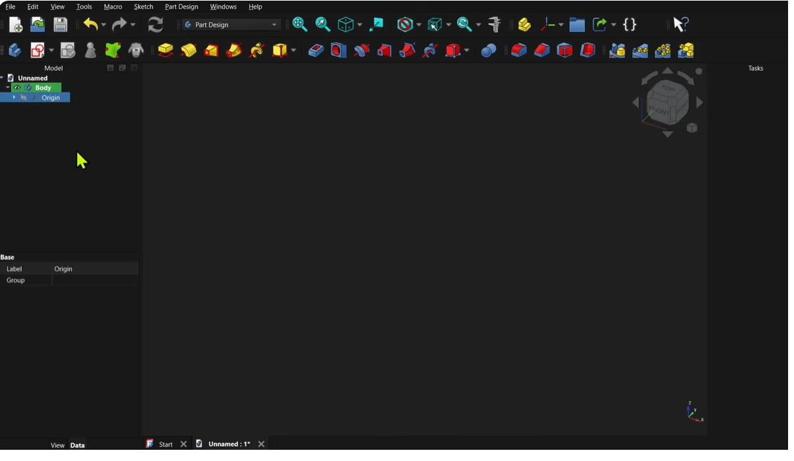
Veelgemaakte foutenErreurs fréquentesCommon mistakes
Werkbalken verschuiven nietLes barres d'outils ne bougent pasToolbars won't move
Rechtsklik op een werkbalk en zet Lock toolbars uit; daarna kun je ze slepen.
Clic droit sur une barre d'outils et désactivez Lock toolbars ; vous pouvez alors les déplacer.
Right-click a toolbar and turn off Lock toolbars; then you can drag them.
Task-paneel verdwenenPanneau Task disparuTask panel gone
Beweeg je muis naar de uiterst rechterrand tot een hint verschijnt en klik die; of gebruik Ctrl + →. Sleep panelen liever niet rond.
Amenez la souris à l'extrême bord droit jusqu'à voir un indice et cliquez ; ou utilisez Ctrl + →. Évitez de déplacer les panneaux.
Move the mouse to the far right edge until a hint appears and click it; or use Ctrl + →. Better not to drag panels around.
Geen Body aangemaakt voor je begintPas de Body créé avant de commencerNo Body created before you start
Zonder actieve Body weet FreeCAD niet waar je bewerking heen moet. Maak altijd eerst een Body.
Sans Body actif, FreeCAD ne sait pas où placer l'opération. Créez toujours un Body d'abord.
Without an active Body, FreeCAD doesn't know where your operation goes. Always create a Body first.
Doe-opdrachtÀ faireTry it
Open FreeCAD 1.1.1, stel taal/eenheden/navigatie/thema in, zet Report view uit, maak een nieuw document met een Body, en oefen tot je vlot kunt roteren, zoomen en pannen. Spring met de navigatiekubus naar Top, Front en Right.
Ouvrez FreeCAD 1.1.1, réglez langue/unités/navigation/thème, désactivez le Report view, créez un nouveau document avec un Body, et entraînez-vous à tourner, zoomer et translater. Avec le cube de navigation, passez à Top, Front et Right.
Open FreeCAD 1.1.1, set language/units/navigation/theme, turn off the Report view, create a new document with a Body, and practise until you can orbit, zoom and pan smoothly. Use the navigation cube to jump to Top, Front and Right.
Voor de radioamateurPour le radioamateurFor the radio amateur
Dit lijkt administratief, maar het is de basis voor élk behuizinkje dat je later print: één Body per los deel (bak, deksel, frontpaneel) houdt je ARDF- of PCB-project netjes en exportklaar.
Cela paraît administratif, mais c'est la base de chaque boîtier que vous imprimerez : un Body par pièce séparée (boîtier, couvercle, face avant) garde votre projet ARDF ou PCB propre et prêt à l'export.
This looks administrative, but it's the basis of every enclosure you'll print: one Body per separate part (case, lid, front panel) keeps your ARDF or PCB project tidy and export-ready.
SamenvattingRésuméSummary
- Welkomstscherm = taal, eenheden, navigatiestijl, thema.
- Twee panelen volstaan: 3D-view + Model + Task; Report view uit.
- Navigatiekubus en hover-hint helpen je oriënteren.
- Eén Body = één solide stuk; de Origin draagt de basisvlakken.
- Écran de bienvenue = langue, unités, style de navigation, thème.
- Deux panneaux suffisent : vue 3D + Model + Task ; Report view désactivé.
- Le cube de navigation et l'aide au survol vous orientent.
- Un Body = une pièce solide ; l'Origin porte les plans de base.
- Welcome screen = language, units, navigation style, theme.
- Two panels are enough: 3D view + Model + Task; Report view off.
- The navigation cube and hover hint help you orient.
- One Body = one solid part; the Origin carries the base planes.
🧠 Onthoud ditRetenezRemember
- Eén Body = één solide stuk. Begin elk onderdeel met een nieuwe, actieve (vette) Body.
- Un Body = une pièce solide. Commencez chaque pièce par un nouveau Body actif (en gras).
- One Body = one solid part. Start every part with a new, active (bold) Body.
Je eerste onderdeel: schets → pad → pocket → mirrorVotre première pièce : esquisse → pad → pocket → mirrorYour first part: sketch → pad → pocket → mirror
Na deze les heb je een volledige, parametrische grondplaat: een volledig bepaalde schets, omgezet naar volume, met een uitsparing, en gespiegeld tot één symmetrisch stuk.À la fin de cette leçon, vous avez une embase paramétrique complète : une esquisse entièrement contrainte, transformée en volume, avec un évidement, puis symétrisée en une seule pièce.After this lesson you have a complete, parametric base plate: a fully constrained sketch turned into volume, with a cut-out, mirrored into one symmetrical part.
1 · De eerste schets (rechthoek + gaten)1 · La première esquisse (rectangle + trous)1 · The first sketch (rectangle + holes)
- Klik het Sketch-icoon. FreeCAD vraagt het vlak: kies het XY-plane. De kubus toont nu Top en je kijkt recht op je tekenvlak.Cliquez l'icône Sketch. FreeCAD demande le plan : choisissez le XY-plane. Le cube affiche Top et vous regardez le plan d'esquisse de face.Click the Sketch icon. FreeCAD asks for the plane: pick the XY-plane. The cube shows Top and you look straight at your sketch plane.
- Open in het Task-paneel de constraint-dropdown en vink Auto constraints én Auto remove redundant constraints aan. Belangrijk voor de volgende stappen.Dans le panneau Task, ouvrez la liste des contraintes et cochez Auto constraints et Auto remove redundant constraints. Important pour la suite.In the Task panel open the constraint dropdown and tick Auto constraints and Auto remove redundant constraints. Important for the next steps.
- Kies het Rectangle-gereedschap. Klik linksboven van de verticale as voor de eerste hoek, beweeg, en typ via de maatvelden (OVP) 50 breedte, Tab, 50 hoogte.Choisissez l'outil Rectangle. Cliquez en haut à gauche de l'axe vertical pour le premier coin, déplacez, et tapez via les champs de cote (OVP) 50 de largeur, Tab, 50 de hauteur.Pick the Rectangle tool. Click above-left of the vertical axis for the first corner, move, and type via the on-view parameters (OVP) 50 width, Tab, 50 height.
- Hover over de verticale as tot een point-on-object-constraint verschijnt en klik: de rechthoek hangt nu vast aan de as. Rechtsklik om het gereedschap te sluiten.Survolez l'axe vertical jusqu'à voir une contrainte point-on-object et cliquez : le rectangle est rattaché à l'axe. Clic droit pour fermer l'outil.Hover over the vertical axis until a point-on-object constraint appears and click: the rectangle is now attached to the axis. Right-click to close the tool.
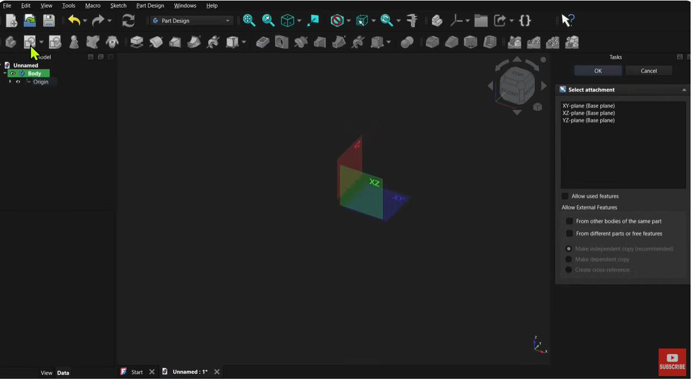
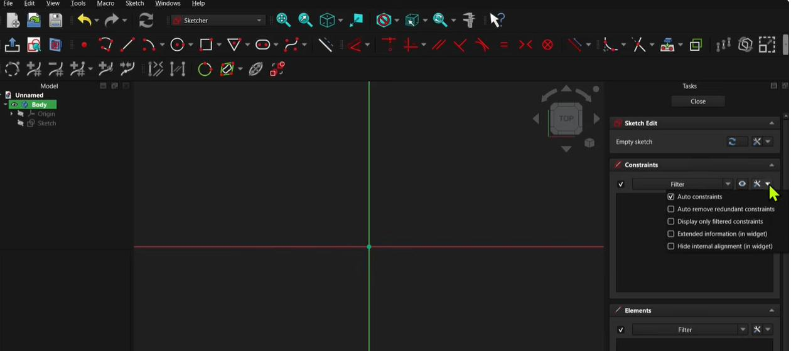
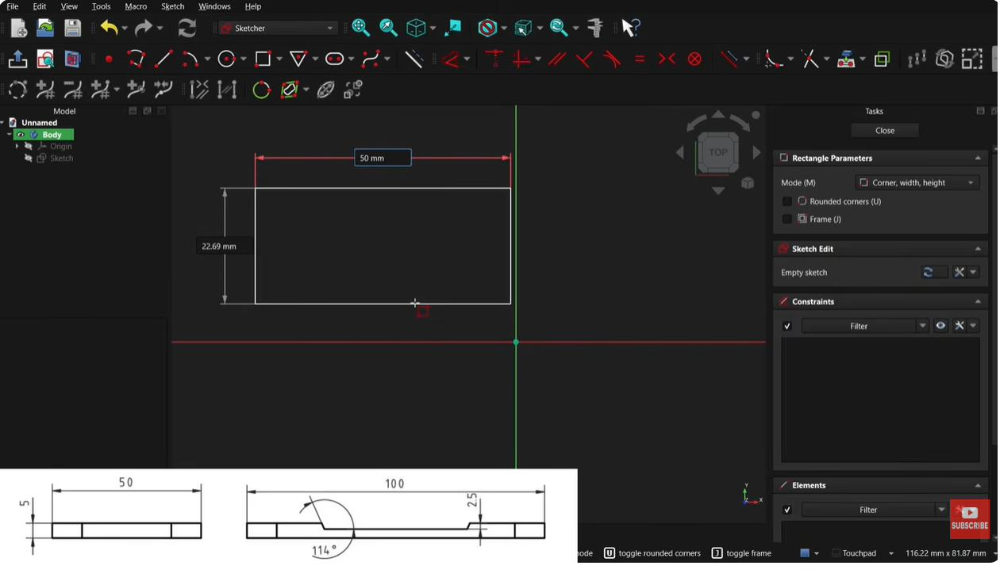
- De schets heeft nog 1 vrijheidsgraad (kan langs Y schuiven). Klik leeg, selecteer de rechterbovenhoek, dan de rechteronderhoek, dan het middenpunt (oorsprong), en pas de Symmetry-constraint toe. De schets wordt volledig groen = volledig bepaald.L'esquisse a encore 1 degré de liberté (glisse selon Y). Cliquez dans le vide, sélectionnez le coin haut-droite, puis bas-droite, puis le point central (origine), et appliquez la contrainte Symmetry. L'esquisse devient entièrement verte = entièrement contrainte.The sketch still has 1 degree of freedom (slides along Y). Click empty, select the top-right corner, then the bottom-right corner, then the midpoint (origin), and apply the Symmetry constraint. The sketch turns fully green = fully constrained.
- Rond de hoeken af met Fillet. Geef de eerste een radius via het maatgereedschap: selecteer de boog, druk M om radius/diameter te wisselen, en zet 10 mm.Arrondissez les coins avec Fillet. Donnez un rayon à la première via l'outil de cote : sélectionnez l'arc, appuyez sur M pour basculer rayon/diamètre, et mettez 10 mm.Round the corners with Fillet. Give the first a radius via the dimension tool: select the arc, press M to toggle radius/diameter, and set 10 mm.
- Maak de tweede boog gelijk met de Equal-constraint i.p.v. opnieuw te dimensioneren.Rendez le second arc égal avec la contrainte Equal plutôt que de coter à nouveau.Make the second arc equal with the Equal constraint instead of dimensioning again.
- Voeg twee gaten toe met Circle, hover over het middelpunt van een fillet (coincident verschijnt automatisch), en maak beide cirkels gelijk met Equal. Sluit de schets via Close.Ajoutez deux trous avec Circle, survolez le centre d'un congé (coincident apparaît tout seul), et rendez les deux cercles égaux avec Equal. Fermez l'esquisse via Close.Add two holes with Circle, hover over a fillet centre (coincident appears automatically), and make both circles equal with Equal. Close the sketch via Close.
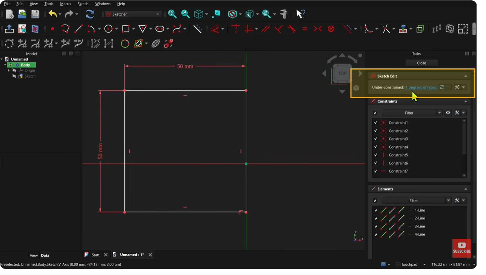
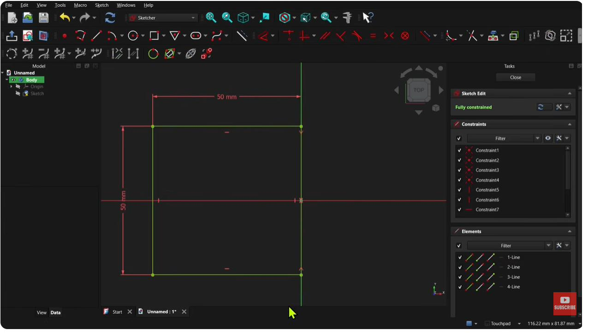
2 · Volume toevoegen met Pad2 · Ajouter du volume avec Pad2 · Add volume with Pad
- Bij het sluiten is de schets al geselecteerd. Klik Pad (Part Design ▸ Apply additive feature ▸ Pad) en zet de lengte op 5 mm. Klik in de 3D-view om de update te zien, dan OK.À la fermeture, l'esquisse est déjà sélectionnée. Cliquez Pad (Part Design ▸ Apply additive feature ▸ Pad) et réglez la longueur sur 5 mm. Cliquez dans la vue 3D, puis OK.On closing, the sketch is already selected. Click Pad (Part Design ▸ Apply additive feature ▸ Pad) and set the length to 5 mm. Click in the 3D view to see the update, then OK.
- In de boom verschijnt Pad met een pijltje: de tip, het actieve einde van je model. Elke nieuwe bewerking verschuift de tip.Dans l'arbre apparaît Pad avec une flèche : la tip, l'extrémité active du modèle. Chaque nouvelle opération déplace la tip.In the tree Pad appears with a small arrow: the tip, the active end of your model. Each new operation moves the tip.
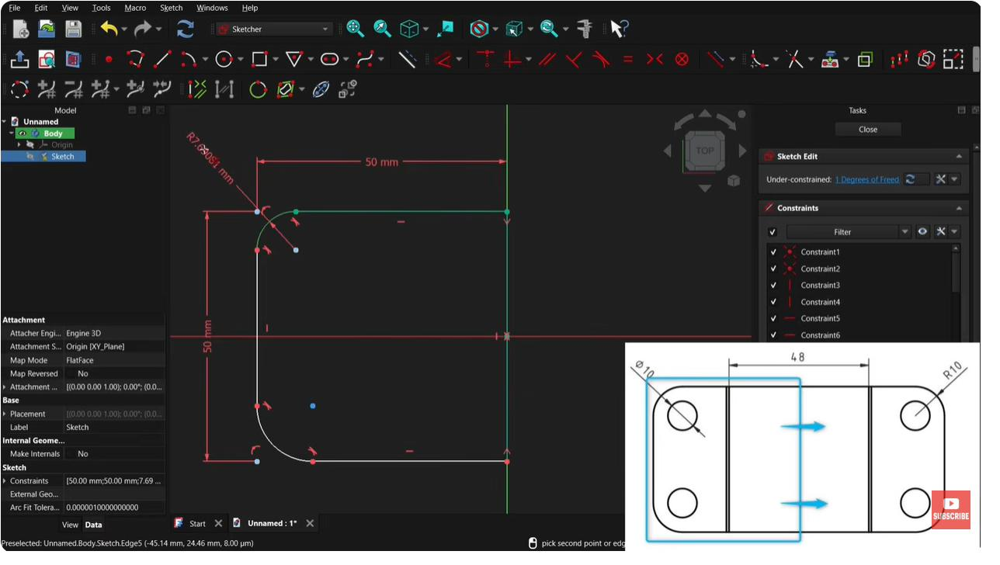
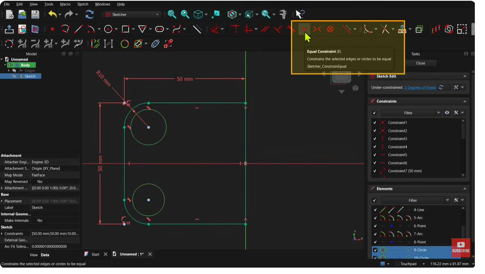
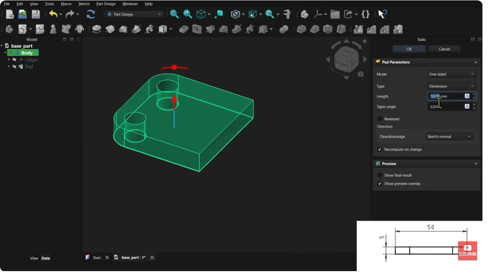
3 · Materiaal wegnemen met Pocket3 · Enlever de la matière avec Pocket3 · Remove material with Pocket
- Selecteer het zijvlak van de pad en klik New sketch: de schets hecht zich aan dat vlak (map mode FlatFace).Sélectionnez la face latérale du pad et cliquez New sketch : l'esquisse se fixe à cette face (map mode FlatFace).Select the side face of the pad and click New sketch: the sketch attaches to that face (map mode FlatFace).
- Klik External geometry en selecteer de bovenrand als referentie. Let op of die lijn vol (= defining) of gestreept (= construction) is.Cliquez External geometry et sélectionnez l'arête supérieure comme référence. Vérifiez si la ligne est pleine (= defining) ou pointillée (= construction).Click External geometry and select the top edge as a reference. Note whether the line is solid (= defining) or dashed (= construction).
- Zet de geïmporteerde lijn met Toggle construction geometry op gestreept, zodat hij niet meetelt als vorm.Passez la ligne importée en pointillé avec Toggle construction geometry, pour qu'elle ne compte pas comme forme.Set the imported line to dashed with Toggle construction geometry, so it doesn't count as shape.
- Teken met Polyline een gesloten profiel; eindig op het beginpunt tot de coincident verschijnt.Dessinez avec Polyline un profil fermé ; terminez sur le point de départ jusqu'au coincident.Draw a closed profile with Polyline; finish on the start point until the coincident appears.
- Dimensioneer: korte lijn 2,5 mm, onderlijn 24 mm, schuine lijn hoek 114°. Sluit de schets.Cotez : ligne courte 2,5 mm, ligne du bas 24 mm, angle 114° sur la ligne oblique. Fermez l'esquisse.Dimension: short line 2.5 mm, bottom line 24 mm, slanted line angle 114°. Close the sketch.
- Klik Pocket, kies bij Type de optie Through all, en OK.Cliquez Pocket, choisissez sous Type l'option Through all, puis OK.Click Pocket, choose Through all under Type, then OK.
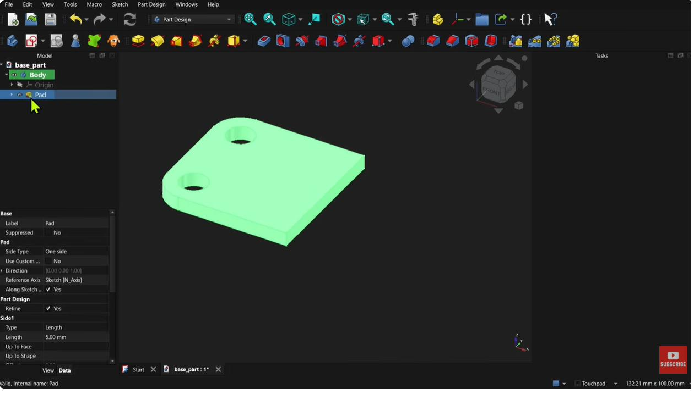
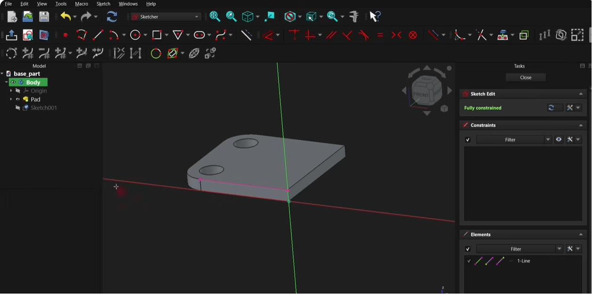
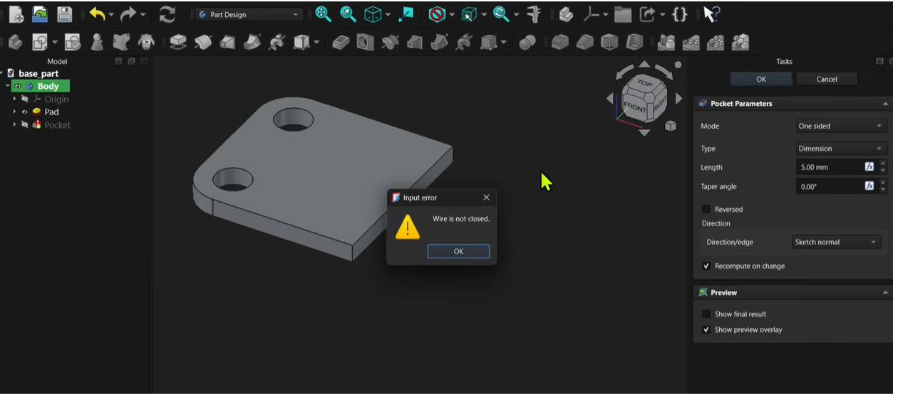
- Test het parametrische gedrag: dubbelklik Pad en wijzig de hoogte. De pocket past zich automatisch aan. Zet daarna terug op 5 mm.Testez le paramétrique : double-cliquez Pad et changez la hauteur. La cavité s'adapte toute seule. Remettez ensuite 5 mm.Test the parametric behaviour: double-click Pad and change the height. The pocket adapts automatically. Then set it back to 5 mm.
- Rechtsklik de Body, Rename → base.Clic droit sur le Body, Rename → base.Right-click the Body, Rename → base.
4 · Spiegelen tot één stuk (Mirror)4 · Symétriser en une pièce (Mirror)4 · Mirror into one part
- Selecteer de hele Body (tip: klik 3× op een vlak — vlak, feature, dan Body).Sélectionnez tout le Body (astuce : cliquez 3× sur une face — face, fonction, puis Body).Select the whole Body (tip: click a face 3× — face, feature, then Body).
- Start Mirror, kies in de dialoog Body (alle features), en spiegel over het YZ-plane van de Origin.Lancez Mirror, choisissez Body (toutes les fonctions), et symétrisez par rapport au YZ-plane de l'Origin.Start Mirror, choose Body in the dialog (all features), and mirror across the Origin's YZ-plane.
- Zie je het spiegelvlak niet goed? Vergroot tijdelijk de datum-weergave via Edit ▸ Preferences (zoek datum) → Datum size, en toon de assen. Klik OK.Plan de symétrie peu visible ? Agrandissez l'affichage des datums via Edit ▸ Preferences (cherchez datum) → Datum size, et affichez les axes. Cliquez OK.Can't see the mirror plane well? Enlarge the datum display via Edit ▸ Preferences (search datum) → Datum size, and show the axes. Click OK.
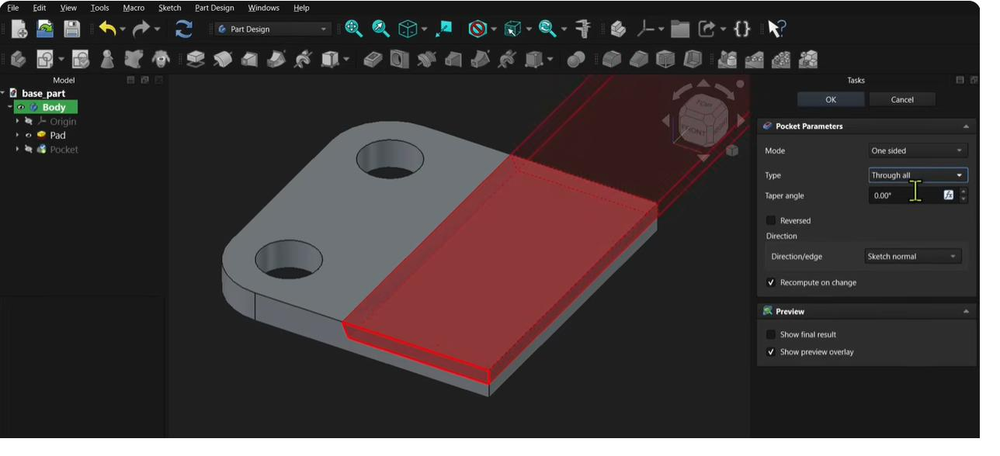
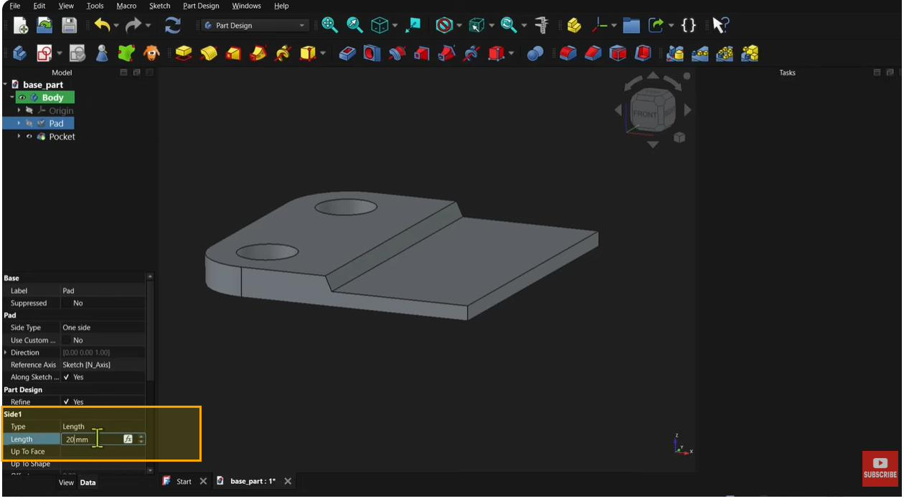
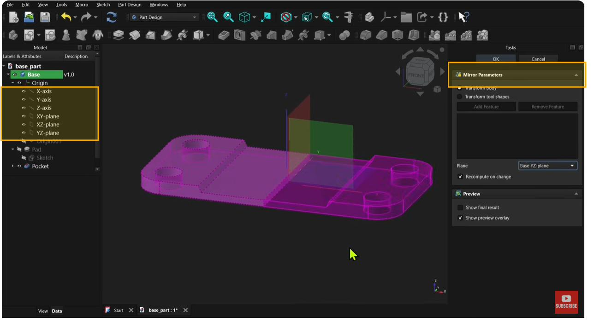
Veelgemaakte foutenErreurs fréquentesCommon mistakes
Schets wordt niet groenL'esquisse ne devient pas verteSketch won't turn green
Er ontbreekt een constraint of de symmetrie zit niet op de oorsprong. Klik op link in het Task-paneel om te zien welke richting nog vrij is.
Il manque une contrainte ou la symétrie n'est pas sur l'origine. Cliquez link dans le panneau Task pour voir la direction encore libre.
A constraint is missing or the symmetry isn't on the origin. Click link in the Task panel to see which direction is still free.
“Why not closed?” bij pocket« Why not closed ? » au pocket“Why not closed?” at pocket
Eén punt is niet samengevoegd. Heropen de schets, box-selecteer de losse punten en geef ze een Coincident; gebruik anders Sketch validation.
Un point n'est pas fusionné. Rouvrez l'esquisse, sélectionnez par boîte les points isolés et appliquez un Coincident ; sinon Sketch validation.
One point isn't joined. Reopen the sketch, box-select the loose points and give them a Coincident; otherwise use Sketch validation.
Geïmporteerde lijn telt mee als vormLa ligne importée compte comme formeImported line counts as shape
Hij staat nog op defining (vol). Zet op construction (gestreept) met Toggle construction geometry.
Elle est encore en defining (pleine). Passez en construction (pointillé) avec Toggle construction geometry.
It's still defining (solid). Set to construction (dashed) with Toggle construction geometry.
Verkeerd spiegelvlakMauvais plan de symétrieWrong mirror plane
Vergroot de Datum size en toon de assen, zodat je XY/XZ/YZ duidelijk uit elkaar houdt vóór je bevestigt.
Agrandissez la Datum size et affichez les axes pour distinguer XY/XZ/YZ avant de valider.
Enlarge the Datum size and show the axes so you tell XY/XZ/YZ apart before confirming.
Doe-opdrachtÀ faireTry it
Bouw exact mee: rechthoek 50×50, fillets 10 mm, twee gelijke gaten, pad 5 mm, een schuine pocket (Through all), hernoem de Body naar base en spiegel over YZ. Sla op als base part.
Reproduisez : rectangle 50×50, congés 10 mm, deux trous égaux, pad 5 mm, un pocket oblique (Through all), renommez en base et symétrisez par rapport à YZ. Enregistrez sous base part.
Build along exactly: rectangle 50×50, 10 mm fillets, two equal holes, 5 mm pad, a slanted pocket (Through all), rename to base and mirror across YZ. Save as base part.
Voor de radioamateurPour le radioamateurFor the radio amateur
Precies deze keten — schets, padden, uitsparing, spiegelen — gebruik je straks voor een bodemplaatje met montagegaten of een symmetrische beugel. Omdat alles parametrisch is, pas je later gewoon de maten aan voor jouw PCB of connector.
Cette chaîne — esquisse, pad, évidement, symétrie — vous servira pour une platine avec trous de fixation ou une équerre symétrique. Tout étant paramétrique, vous ajusterez plus tard les cotes pour votre PCB ou connecteur.
This chain — sketch, pad, cut-out, mirror — you'll use for a base plate with mounting holes or a symmetrical bracket. Since it's all parametric, you'll later just adjust the dimensions for your PCB or connector.
SamenvattingRésuméSummary
- Schets op een vlak, Auto constraints aan → mik op volledig groen.
- Pad = volume erbij; Pocket = volume eraf; Through all snijdt altijd door.
- Externe geometrie: vol = vormbepalend, gestreept = referentie.
- Alles is parametrisch: wijzig een maat en het model volgt.
- Esquisse sur un plan, Auto constraints activé → visez le tout vert.
- Pad = ajoute du volume ; Pocket = en enlève ; Through all traverse toujours.
- Géométrie externe : pleine = définit la forme, pointillée = référence.
- Tout est paramétrique : changez une cote et le modèle suit.
- Sketch on a plane, Auto constraints on → aim for fully green.
- Pad = adds volume; Pocket = removes it; Through all always cuts through.
- External geometry: solid = shape-defining, dashed = reference.
- Everything is parametric: change a dimension and the model follows.
🧠 Onthoud ditRetenezRemember
- Groen = onder controle. Een volledig bepaalde schets is de fundering; bouw nooit volume op een schets die nog kan schuiven.
- Vert = maîtrisé. Une esquisse entièrement contrainte est la base ; ne construisez jamais de volume sur une esquisse qui peut encore glisser.
- Green = under control. A fully constrained sketch is the foundation; never build volume on a sketch that can still shift.
De beugel bouwenConstruire l'équerreBuild the bracket
Na deze les teken je een vorm met de polyligne in verschillende modi, maak je een schets robuust met tangent- en symmetrie-constraints, en bouw je verder op een tweede vlak — de basis voor elke L-vormige beugel.À la fin de cette leçon, vous dessinez avec la polyligne en plusieurs modes, vous rendez une esquisse robuste avec des contraintes de tangence et de symétrie, et vous construisez sur une deuxième face — la base de toute équerre en L.After this lesson you draw with the polyline in several modes, make a sketch robust with tangent and symmetry constraints, and build on a second face — the basis of any L-shaped bracket.
1 · De basis van de beugel (polyligne in modi)1 · La base (polyligne en modes)1 · The base (polyline in modes)
- Nieuw document, nieuwe Body, en een Sketch op het XY-plane.Nouveau document, nouveau Body, et une Sketch sur le XY-plane.New document, new Body, and a Sketch on the XY-plane.
- Kies Polyline. Hover over de verticale as (point-on-object) en klik. Teken een lijn naar links, ~25 mm; exacte plaatsing volgt uit constraints.Choisissez Polyline. Survolez l'axe vertical (point-on-object) et cliquez. Tracez une ligne vers la gauche, ~25 mm.Pick Polyline. Hover over the vertical axis (point-on-object) and click. Draw a line to the left, ~25 mm.
- Bij een hoek met afronding: druk M om van lijn naar boog te wisselen. M wisselt door de modi; de aansluitende lijn wordt automatisch tangent.À un coin arrondi : appuyez sur M pour passer de ligne à arc. M fait défiler les modes ; la ligne suivante devient tangente.At a rounded corner: press M to switch from line to arc. M cycles the modes; the next line becomes tangent.
- Sluit het profiel en rechtsklik om het gereedschap te verlaten.Fermez le profil et clic droit pour quitter l'outil.Close the profile and right-click to leave the tool.
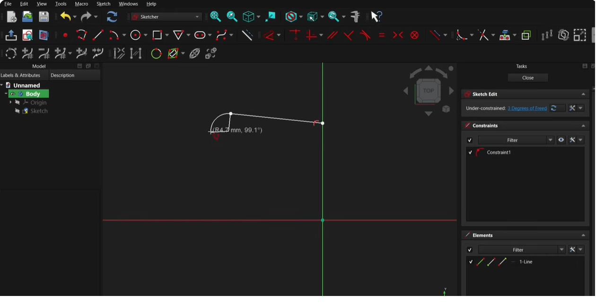
- Sleep even aan de schets om te zien wat nog vrij is. Maak de boven- en onderlijn recht met de Horizontal/Vertical-constraint waar nodig.Faites glisser l'esquisse pour voir ce qui est libre. Redressez les lignes haut/bas avec Horizontal/Vertical au besoin.Drag the sketch to see what's free. Straighten the top and bottom lines with Horizontal/Vertical where needed.
- Voeg Tangent-constraints toe tussen elke rechte lijn en de aangrenzende boog.Ajoutez des contraintes Tangent entre chaque ligne droite et l'arc adjacent.Add Tangent constraints between each straight line and the adjacent arc.
- Plaats twee gaten met Circle op de boog-middelpunten (coincident verschijnt vanzelf).Placez deux trous avec Circle sur les centres d'arc (coincident tout seul).Place two holes with Circle on the arc centres (coincident appears by itself).
- Dimensioneer: breedte 25 mm, hoogte 50 mm, cirkel 10 mm, boog-radius 10 mm. Maak cirkels en bogen Equal.Cotez : largeur 25 mm, hauteur 50 mm, cercle 10 mm, rayon d'arc 10 mm. Rendez cercles et arcs Equal.Dimension: width 25 mm, height 50 mm, circle 10 mm, arc radius 10 mm. Make circles and arcs Equal.
- Centreer met Symmetry (bovenpunt + onderpunt + oorsprong) → groen. Sluit en Pad op 5 mm.Centrez avec Symmetry (point haut + point bas + origine) → vert. Fermez et Pad de 5 mm.Centre with Symmetry (top + bottom point + origin) → green. Close and Pad at 5 mm.
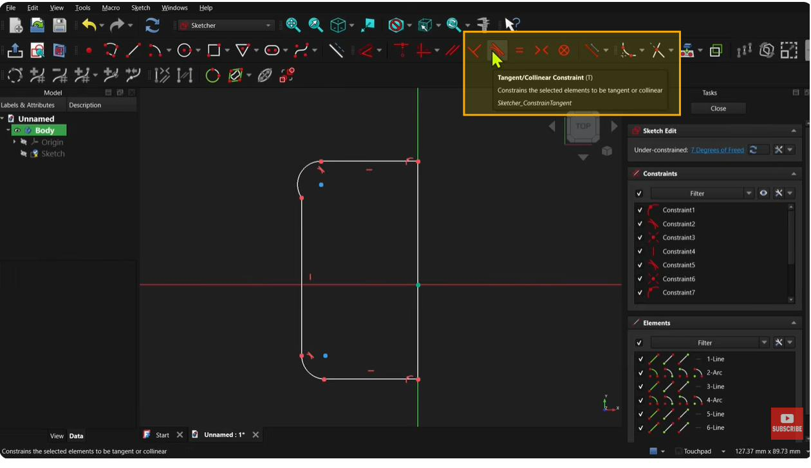
2 · De zijkant op een tweede vlak2 · La face latérale sur un 2e plan2 · The side face on a second plane
- Selecteer het verticale vlak van de pad en klik New sketch.Sélectionnez la face verticale du pad et cliquez New sketch.Select the vertical face of the pad and click New sketch.
- Twee manieren om geometrie binnen te halen. Als referentie: zet Toggle construction geometry aan (blauw), External geometry op de twee bovenhoekpunten, terug naar defining (wit), en teken zelf een lijn. Als defining-lijn: blijf in defining en projecteer de lijn — die komt vol binnen.Deux façons d'importer. En référence : activez Toggle construction geometry (bleu), External geometry sur les deux points de coin, repassez en defining (blanc), et tracez une ligne. En ligne defining : restez en defining et projetez la ligne — elle arrive pleine.Two ways to import. As reference: turn on Toggle construction geometry (blue), External geometry on the two corner points, back to defining (white), and draw a line. As a defining line: stay in defining and project the line — it comes in solid.
- Teken de ronde delen met Arc by 3 points (pijltje naast het boog-icoon) en verbind met lijnen; voeg Tangent-constraints toe.Dessinez les courbes avec Arc by 3 points (flèche à côté de l'icône arc) et reliez par des lignes ; ajoutez des Tangent.Draw the curves with Arc by 3 points (arrow next to the arc icon) and connect with lines; add Tangent constraints.
- Leg het middelpunt van de bovenste boog coincident op de verticale as. Dimensioneer (hoogte tot boogcentrum 30 mm, radius 10 mm, gat 5 mm) tot groen.Placez le centre de l'arc supérieur coincident sur l'axe vertical. Cotez (hauteur au centre 30 mm, rayon 10 mm, trou 5 mm) jusqu'au vert.Set the top arc centre coincident on the vertical axis. Dimension (height to arc centre 30 mm, radius 10 mm, hole 5 mm) until green.
- Sluit en Pad. Doet hij niets? Vink Reverse direction aan, zet 5 mm.Fermez et Pad. Rien ? Cochez Reverse direction, mettez 5 mm.Close and Pad. Nothing? Tick Reverse direction, set 5 mm.
- Rechtsklik de Body → Rename → bracket. Opslaan.Clic droit sur le Body → Rename → bracket. Enregistrez.Right-click the Body → Rename → bracket. Save.
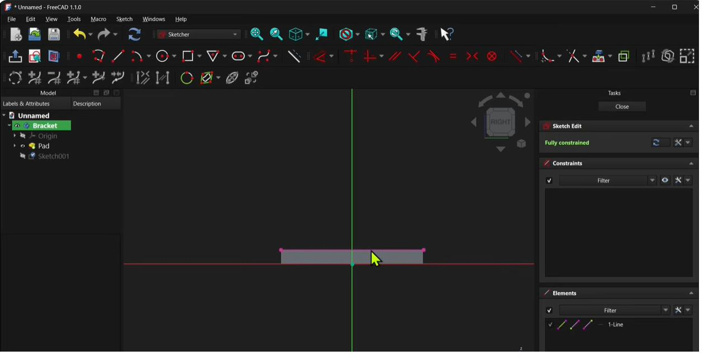
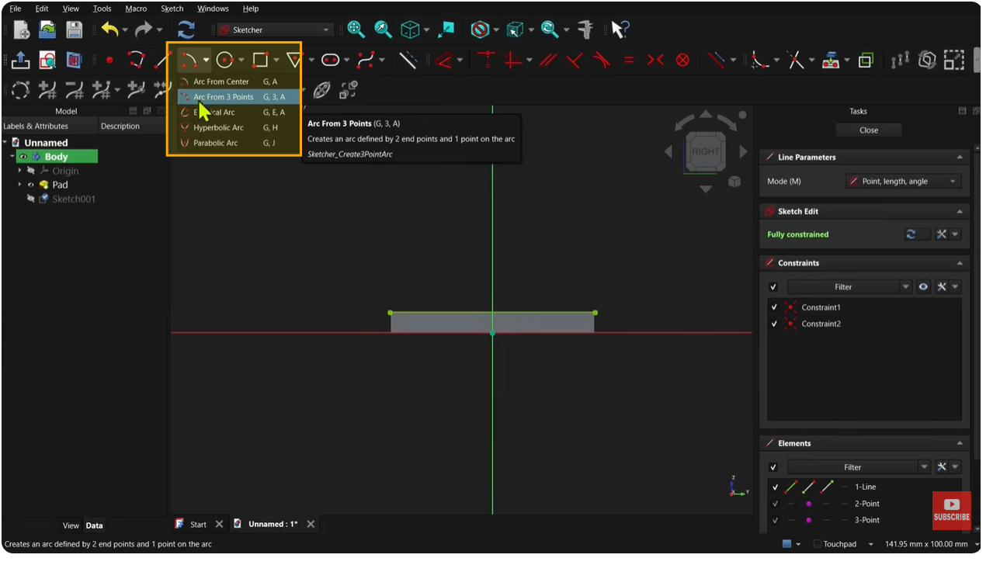
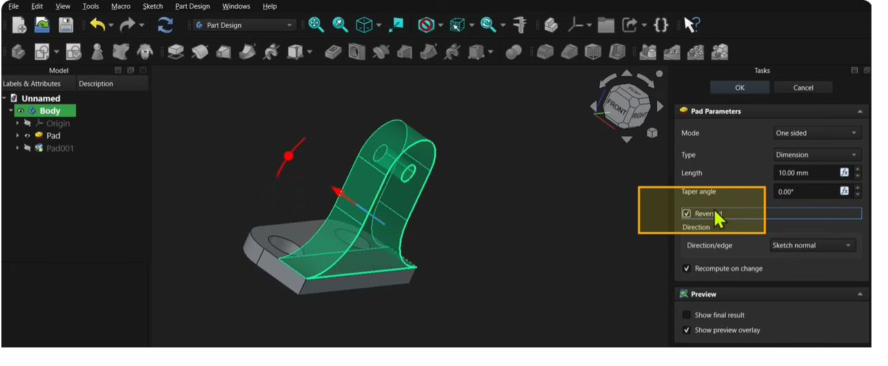
Veelgemaakte foutenErreurs fréquentesCommon mistakes
Polyligne sluit nietLa polyligne ne se ferme pasPolyline won't close
Eindig exact op het beginpunt tot de coincident verschijnt.
Terminez exactement sur le point de départ jusqu'au coincident.
End exactly on the start point until the coincident appears.
Bogen lopen hoekig overArcs anguleuxArcs meet at an angle
Er ontbreekt een Tangent-constraint. Selecteer lijn + aangrenzende boog en pas tangent toe.
Il manque une contrainte Tangent. Sélectionnez ligne + arc adjacent et appliquez la tangence.
A Tangent constraint is missing. Select line + adjacent arc and apply tangent.
Pad lijkt niets te doenLe pad semble inertePad seems to do nothing
Hij extrudeert de verkeerde kant op. Vink Reverse direction aan.
Il extrude du mauvais côté. Cochez Reverse direction.
It extrudes the wrong way. Tick Reverse direction.
Geprojecteerde lijn telt mee als vormLigne projetée comptée comme formeProjected line counts as shape
Referentie? Zet op construction (gestreept). Gebruiken? Laat op defining (vol).
Référence ? En construction (pointillé). Pour l'utiliser ? En defining (pleine).
Reference? Set to construction (dashed). Use it? Leave defining (solid).
Doe-opdrachtÀ faireTry it
Bouw de beugel mee zoals in het filmpje: basis met de polyligne (breedte 25, hoogte 50, gaten 10 mm, symmetrisch), pad 5 mm; daarna de zijkant met een geprojecteerde lijn, arc-by-3-points, gat 5 mm, pad 5 mm met Reverse direction. Hernoem naar bracket en sla op.
Construisez l'équerre comme dans la vidéo : base à la polyligne (largeur 25, hauteur 50, trous 10 mm, symétrique), pad 5 mm ; puis la face latérale avec une ligne projetée, arc-by-3-points, trou 5 mm, pad 5 mm avec Reverse direction. Renommez en bracket et enregistrez.
Build the bracket as in the video: base with the polyline (width 25, height 50, 10 mm holes, symmetrical), pad 5 mm; then the side face with a projected line, arc-by-3-points, 5 mm hole, pad 5 mm with Reverse direction. Rename to bracket and save.
Voor de radioamateurPour le radioamateurFor the radio amateur
Een tweede vlak en geprojecteerde randen heb je nodig zodra een onderdeel niet plat is: een antennebeugel, een hoekje om een PCB rechtop te houden, of een montagelip aan een behuizing.
Une deuxième face et des arêtes projetées sont nécessaires dès qu'une pièce n'est pas plate : équerre d'antenne, coin pour tenir un PCB droit, patte de fixation sur un boîtier.
A second face and projected edges are needed as soon as a part isn't flat: an antenna bracket, a corner to hold a PCB upright, a mounting lip on an enclosure.
SamenvattingRésuméSummary
- M wisselt de polyligne tussen lijn- en boogmodus.
- Tangent + symmetrie = een robuuste schets.
- Externe geometrie: vol = vorm, gestreept = referentie.
- Pad de verkeerde kant op? Reverse direction.
- M bascule la polyligne ligne/arc.
- Tangence + symétrie = une esquisse robuste.
- Géométrie externe : pleine = forme, pointillée = référence.
- Pad du mauvais côté ? Reverse direction.
- M toggles the polyline line/arc.
- Tangent + symmetry = a robust sketch.
- External geometry: solid = shape, dashed = reference.
- Pad the wrong way? Reverse direction.
🧠 Onthoud ditRetenezRemember
- Teken niet over wat al bestaat. Projecteer bestaande randen als externe geometrie — vol om te gebruiken, gestreept als referentie.
- Ne redessinez pas ce qui existe. Projetez les arêtes en géométrie externe — pleine pour l'utiliser, pointillée en référence.
- Don't redraw what already exists. Project existing edges as external geometry — solid to use, dashed as reference.
Ribbe & afkantingNervure & chanfreinRib & chamfer
Na deze les voeg je een versterkingsribbe (gusset) toe, ken je de beruchte chamfer-valkuil, en weet je waarom afwerk-features (fillet/chamfer) altijd als laatste komen.À la fin de cette leçon, vous ajoutez une nervure (gousset), connaissez le piège du chanfrein, et savez pourquoi les finitions (fillet/chamfer) viennent en dernier.After this lesson you add a reinforcing rib (gusset), know the chamfer pitfall, and know why dress-up features (fillet/chamfer) come last.
1 · De ribbe — de leerzame, langere weg1 · La nervure — la voie longue1 · The rib — the longer way
- Selecteer het vlak waar de ribbe komt en maak een New sketch. Gebruik Toggle selection view om door het model te snijden en de schets helder te zien.Sélectionnez la face de la nervure et créez une New sketch. Utilisez Toggle selection view pour trancher le modèle et voir l'esquisse.Select the face for the rib and make a New sketch. Use Toggle selection view to cut through the model and see the sketch.
- Projecteer de onderrand met External geometry als construction (gestreept) — de referentielijn waar de ribbe op staat.Projetez l'arête inférieure avec External geometry en construction (pointillé) — la ligne de référence de la nervure.Project the bottom edge with External geometry as construction (dashed) — the reference line the rib stands on.
- Teken een Rectangle op die lijn (point-on-object), centreer met Symmetry, dimensioneer (breedte 5 mm, hoogte 20 mm) tot groen.Dessinez un Rectangle sur cette ligne (point-on-object), centrez avec Symmetry, cotez (largeur 5 mm, hauteur 20 mm) jusqu'au vert.Draw a Rectangle on that line (point-on-object), centre with Symmetry, dimension (width 5 mm, height 20 mm) until green.
- Sluit en Pad op 20 mm. Reikt de pad tot een aangrenzend vlak, dan versmelt FreeCAD de vlakken netjes.Fermez et Pad de 20 mm. Si le pad atteint une face adjacente, FreeCAD fusionne les faces.Close and Pad at 20 mm. If the pad reaches an adjacent face, FreeCAD merges the faces.
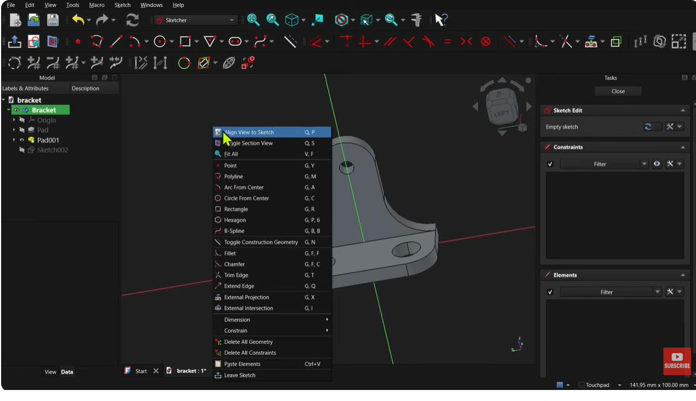
2 · De chamfer-valkuil2 · Le piège du chanfrein2 · The chamfer pitfall
- Selecteer de bovenrand van de ribbe en start Chamfer. Verhoog de waarde en kijk hoe de afkanting groeit.Sélectionnez l'arête supérieure et lancez Chamfer. Augmentez la valeur.Select the top edge and start Chamfer. Raise the value and watch it grow.
- Zet je hem op de volledige 20 mm, dan faalt hij. Zet 19,99 mm: het werkt, met verwaarloosbaar restmateriaal.À la totalité des 20 mm, il échoue. Mettez 19,99 mm : ça marche, reste négligeable.At the full 20 mm it fails. Set 19.99 mm: it works, negligible leftover.
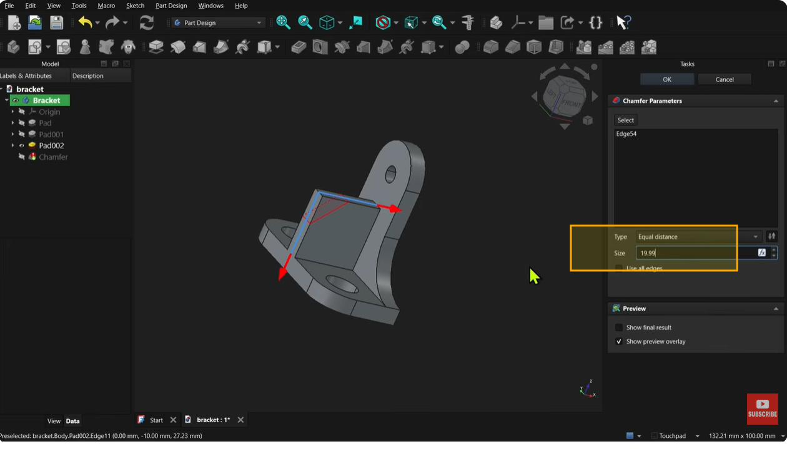
3 · Dezelfde ribbe — de schone weg3 · La même nervure — la voie propre3 · The same rib — the clean way
- Verwijder eerst de chamfer, dan de pad, dan de losgekomen schets.Supprimez le chanfrein, puis le pad, puis l'esquisse libérée.Delete the chamfer, then the pad, then the released sketch.
- Nieuwe schets op het XZ-plane. Twee manieren: zonder selectie de Sketch-knop → kies XZ uit de lijst; óf selecteer de vlak-face op XZ → Sketch.Nouvelle esquisse sur le XZ-plane. Deux façons : sans sélection le bouton Sketch → choisir XZ ; ou sélectionner la face sur XZ → Sketch.New sketch on the XZ-plane. Two ways: with nothing selected the Sketch button → choose XZ; or select the face on XZ → Sketch.
- Bij de vlak-methode: zet in Attachment (niet Placement) de offset langs Z op −25 mm om te centreren. Toggle selection view om erdoorheen te zien.Méthode par face : dans Attachment (pas Placement), offset selon Z à −25 mm pour centrer. Toggle selection view pour voir à travers.Face method: in Attachment (not Placement) set the offset along Z to −25 mm to centre. Toggle selection view to see through.
- Projecteer de randen, teken met Polyline een driehoek, dimensioneer (25 mm) tot groen, en Pad met Symmetric op 5 mm.Projetez les arêtes, dessinez un triangle à la Polyline, cotez (25 mm) jusqu'au vert, et Pad avec Symmetric de 5 mm.Project the edges, draw a triangle with Polyline, dimension (25 mm) until green, and Pad with Symmetric at 5 mm.
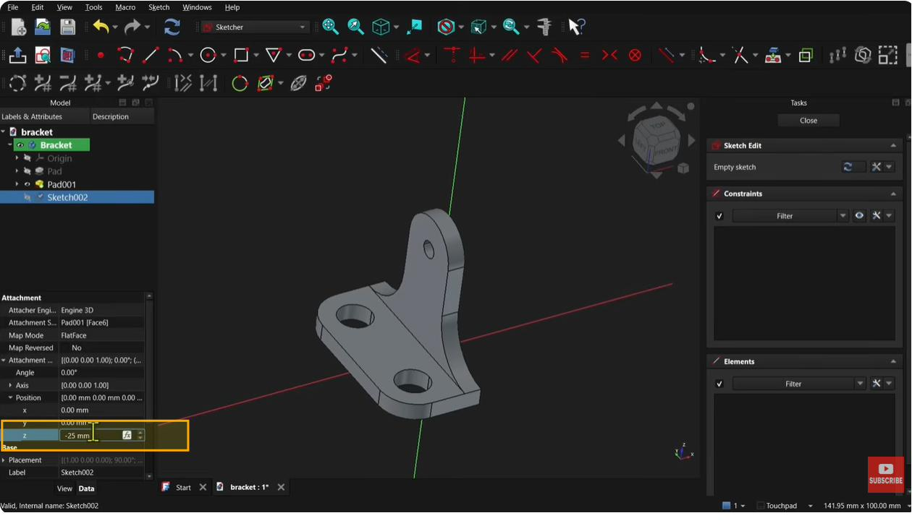
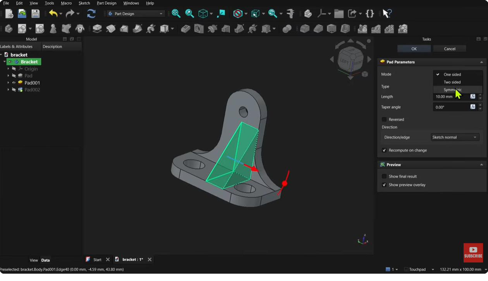
Veelgemaakte foutenErreurs fréquentesCommon mistakes
Chamfer op exacte maat → errorChanfrein à la cote exacte → errorChamfer at exact size → error
Laat marge (19,99 i.p.v. 20), of vermijd samenvallen met een rand.
Laissez une marge (19,99 au lieu de 20), ou évitez la coïncidence avec une arête.
Leave a margin (19.99 instead of 20), or avoid coinciding with an edge.
Chamfer breekt na maatwijzigingLe chanfrein casse après un changementChamfer breaks after a change
Een vroeg geplaatste dress-up is fragiel. Verklein iets, of plaats hem laatst.
Une finition placée tôt est fragile. Réduisez, ou placez-la en dernier.
An early dress-up is fragile. Shrink it, or place it last.
Schets op XZ niet gecentreerdEsquisse XZ non centréeXZ sketch not centred
Vergeet de attachment-offset langs Z niet (−25 mm); in Attachment, niet Placement.
N'oubliez pas l'offset d'attachment selon Z (−25 mm) ; dans Attachment, pas Placement.
Don't forget the attachment offset along Z (−25 mm); in Attachment, not Placement.
Doe-opdrachtÀ faireTry it
Doe beide wegen zoals in het filmpje: eerst de ribbe via rechthoek + pad + chamfer (ervaar de 19,99 mm-grens), verwijder daarna alles en bouw de schone driehoek-gusset op het XZ-vlak met een symmetrische pad.
Faites les deux voies comme dans la vidéo : d'abord la nervure via rectangle + pad + chanfrein (éprouvez la limite 19,99 mm), puis supprimez tout et construisez le gousset triangulaire propre sur XZ avec un pad symétrique.
Do both ways as in the video: first the rib via rectangle + pad + chamfer (experience the 19.99 mm limit), then delete everything and build the clean triangular gusset on XZ with a symmetric pad.
Voor de radioamateurPour le radioamateurFor the radio amateur
Een ribbe versterkt waar een beugel of behuizing buigt — een antennesteun of een wand die een zwaardere connector draagt. Voor de print vermijdt een gusset overhang; afgekante onderranden helpen tegen de “olifantsvoet” van de eerste laag.
Une nervure renforce là où ça fléchit — support d'antenne ou paroi portant un connecteur lourd. À l'impression, un gousset évite les surplombs ; des chanfreins en bas aident contre le « pied d'éléphant ».
A rib reinforces where it bends — an antenna support or a wall carrying a heavier connector. For printing a gusset avoids overhang; chamfered bottom edges help against the “elephant's foot”.
SamenvattingRésuméSummary
- Toggle selection view = door het model kijken.
- Chamfer op exacte randmaat faalt → laat marge of plaats laatst.
- Dress-up features horen als laatste.
- Attachment-offset + symmetrisch padden = nette, gecentreerde ribbe.
- Toggle selection view = voir à travers le modèle.
- Chanfrein à la cote exacte échoue → marge ou en dernier.
- Les finitions viennent en dernier.
- Offset d'attachment + pad symétrique = nervure propre et centrée.
- Toggle selection view = see through the model.
- Chamfer at exact edge size fails → margin or place last.
- Dress-up features belong last.
- Attachment offset + symmetric pad = clean, centred rib.
🧠 Onthoud ditRetenezRemember
- Fillet en chamfer komen laatst. Vroeg geplaatste afwerk-features maken je model breekbaar bij elke maatwijziging.
- Fillet et chanfrein en dernier. Placées tôt, les finitions rendent le modèle fragile à chaque changement de cote.
- Fillet and chamfer come last. Placed early, dress-up features make your model fragile at every dimension change.
Kleur, export & variantenCouleur, export & variantesColour, export & variants
Na deze les geef je een onderdeel kleur of materiaal, exporteer je het printklaar naar de slicer, en maak je met Clone meerdere varianten die één parametrische bron delen. Hier sluit de print-rode-draad.À la fin de cette leçon, vous colorez une pièce, l'exportez prête à imprimer, et créez avec Clone plusieurs variantes partageant une source paramétrique. Le fil rouge de l'impression se referme ici.After this lesson you colour a part, export it print-ready, and use Clone to make several variants sharing one parametric source. This closes the printing thread.
1 · Uiterlijk: kleur of materiaal1 · Apparence : couleur ou matériau1 · Appearance: colour or material
- Snelle kleur: rechtsklik de Body → Random color. Fijner: tabblad View, vouw Shape appearance open en kies een Diffuse color.Couleur rapide : clic droit → Random color. Plus fin : onglet View, dépliez Shape appearance, choisissez une Diffuse color.Quick colour: right-click the Body → Random color. Finer: View tab, expand Shape appearance, pick a Diffuse color.
- Een materiaal: rechtsklik de Body → Appearance, vouw Material open, kies bv. Aluminium. Bewaar met File ▸ Save all.Un matériau : clic droit → Appearance, dépliez Material, choisissez p. ex. Aluminium. Enregistrez : File ▸ Save all.A material: right-click the Body → Appearance, expand Material, pick e.g. Aluminium. Save with File ▸ Save all.
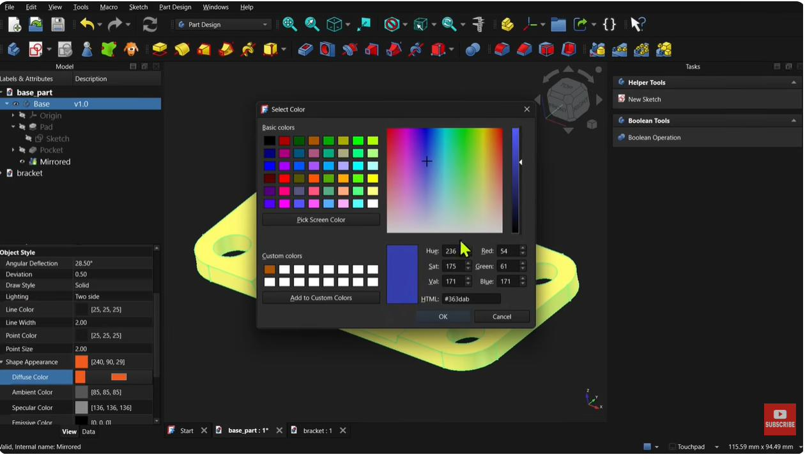
2 · Exporteren naar de slicer2 · Exporter vers le slicer2 · Export to the slicer
- Selecteer in de boom de Body (of een feature). Wat je selecteert, bepaalt wát er exporteert.Sélectionnez le Body (ou une fonction). Ce que vous sélectionnez détermine l'export.Select the Body (or a feature). What you select determines what exports.
- Ga naar File ▸ Export en kies het formaat: STL/3MF voor de printer, STEP voor hergebruik. Bewaar.Allez dans File ▸ Export et choisissez : STL/3MF pour l'imprimante, STEP pour réutiliser. Enregistrez.Go to File ▸ Export and choose: STL/3MF for the printer, STEP for reuse. Save.
- Controleer door terug te importeren: nieuw document, File ▸ Import.Vérifiez en réimportant : nouveau document, File ▸ Import.Check by re-importing: new document, File ▸ Import.
- Je kunt ook op een eerder punt in de history exporteren: selecteer een oudere feature, maak die zichtbaar en exporteer.Vous pouvez aussi exporter à un point antérieur : sélectionnez une fonction plus ancienne, rendez-la visible, exportez.You can also export at an earlier point: select an older feature, make it visible and export.
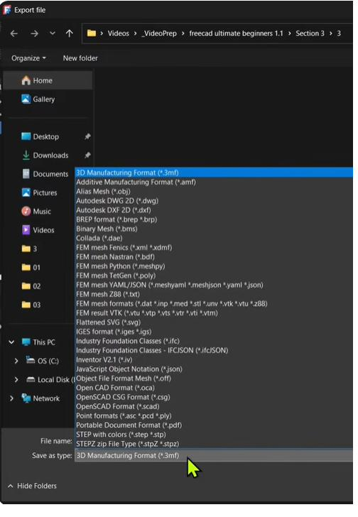
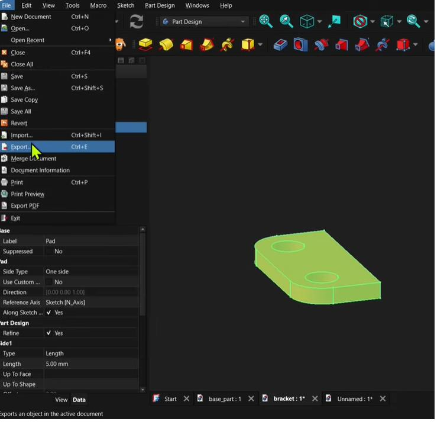
Print-rode-draadFil rouge impressionPrint thread
Dit is de brug naar je printer: het STL/3MF-bestand open je in de slicer van je keuze. Denk nu al aan oriëntatie, wanddikte en speling — concrete mm-waarden blijven printer-, materiaal- en slicer-afhankelijk; verifieer met een testprint. De diepere uitwerking staat in H23.
C'est le pont vers l'imprimante : ouvrez le STL/3MF dans le slicer de votre choix. Pensez orientation, épaisseur, jeu — les valeurs en mm restent dépendantes de l'imprimante/du matériau/du slicer ; vérifiez par une impression de test. Approfondissement en H23.
This is the bridge to your printer: open the STL/3MF in the slicer of your choice. Consider orientation, wall thickness, clearance — mm values stay printer/material/slicer-dependent; verify with a test print. Deeper treatment in H23.
3 · Varianten met Clone3 · Variantes avec Clone3 · Variants with Clone
- Doel: twee versies (ronde gaten vs. sleuven) met dezelfde basis. Verplaats de gaten naar het einde van de boom: verwijder ze uit de eerste schets, maak ze opnieuw met een aparte schets + Pocket op het bovenvlak.Objectif : deux versions (trous ronds vs. fentes), même base. Déplacez les trous en fin d'arbre : retirez-les de la première esquisse, refaites-les avec une esquisse + Pocket sur la face supérieure.Goal: two versions (round holes vs. slots), same base. Move the holes to the end of the tree: remove them from the first sketch, recreate with a separate sketch + Pocket on the top face.
- Selecteer de pad waarvan je aftakt en klik Clone (Part Design ▸ Clone). Een gekoppelde parametrische kopie; de clone toont van welke basis-feature hij komt.Sélectionnez le pad de dérivation et cliquez Clone (Part Design ▸ Clone). Copie paramétrique liée ; le clone montre sa fonction de base.Select the pad to branch from and click Clone (Part Design ▸ Clone). A linked parametric copy; the clone shows its base feature.
- Hernoem de clone naar bracket slot, maak actief, en zet er met de Slot-tool sleuven in. Centreer met Symmetry en dimensioneer.Renommez en bracket slot, rendez actif, créez des fentes avec l'outil Slot. Centrez avec Symmetry et cotez.Rename to bracket slot, make active, add slots with the Slot tool. Centre with Symmetry and dimension.
- Tip: met een referentie-dimensie (vink Reference aan) wordt een maat enkel meetwaarde — handig om iets op het oog te plaatsen en dan de echte waarde in te vullen.Astuce : une cote de référence (cochez Reference) devient une simple mesure — pratique pour placer « à l'œil » puis saisir la vraie valeur.Tip: a reference dimension (tick Reference) becomes a read-out only — handy to place by eye then enter the real value.
- Wijzig je iets aan de basis, dan werkt dat automatisch door in de clone-varianten.Modifiez la base : cela se répercute automatiquement dans les variantes.Change the base: it propagates automatically to the clone variants.
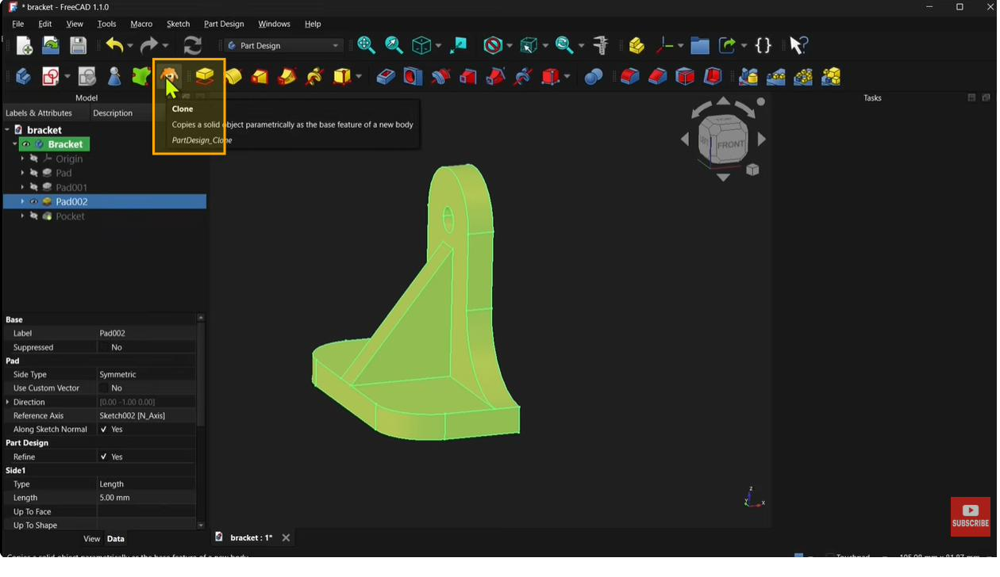
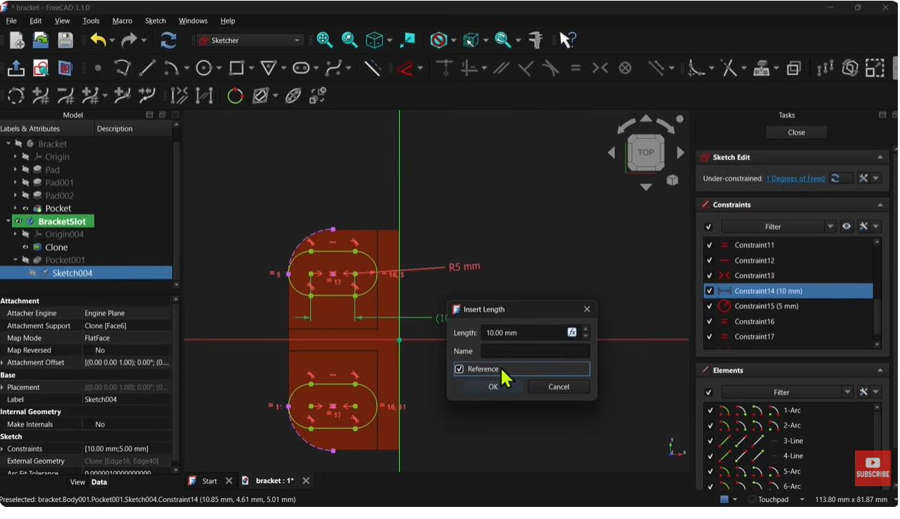
Veelgemaakte foutenErreurs fréquentesCommon mistakes
Verkeerde selectie bij exportMauvaise sélection à l'exportWrong selection at export
Selecteer bewust de Body/feature vóór File ▸ Export, anders exporteert het verkeerde (of niets).
Sélectionnez sciemment le Body/la fonction avant File ▸ Export, sinon le mauvais (ou rien) s'exporte.
Deliberately select the Body/feature before File ▸ Export, otherwise the wrong thing (or nothing) exports.
Clone laat zich niet makenLe clone ne se crée pasClone won't be made
De gaten zitten nog in de eerste schets. Verplaats ze eerst naar het einde van de boom.
Les trous sont encore dans la première esquisse. Déplacez-les d'abord en fin d'arbre.
The holes are still in the first sketch. Move them to the end of the tree first.
Kleur verandert de print nietLa couleur ne change pas l'impressionColour doesn't change the print
Klopt — enkel weergave. Voor de print telt alleen geometrie + exportformaat.
Exact — affichage seul. Seuls comptent géométrie + format d'export.
Correct — display only. Only geometry + export format matter for the print.
Doe-opdrachtÀ faireTry it
Geef je beugel een materiaal, exporteer naar STL of 3MF en importeer terug ter controle. Maak met Clone een tweede variant bracket slot met sleuven, en wijzig een basismaat om te zien hoe de variant meebeweegt.
Donnez un matériau, exportez en STL/3MF et réimportez. Créez avec Clone une variante bracket slot avec fentes, et changez une cote de base pour voir la variante suivre.
Give the bracket a material, export to STL/3MF and re-import. Use Clone for a variant bracket slot with slots, and change a base dimension to see the variant follow.
Voor de radioamateurPour le radioamateurFor the radio amateur
Clone is goud voor de shack: één basisbeugel, maar varianten met ronde gaten, sleuven of een ander gatpatroon voor verschillende PCB's of connectoren. Pas je de basismaat aan, dan kloppen alle varianten meteen.
Clone est précieux : une équerre de base, des variantes avec trous, fentes ou autre schéma pour divers PCB/connecteurs. Changez la cote de base et tout est à jour.
Clone is gold: one base bracket, variants with holes, slots or a different pattern for various PCBs/connectors. Change the base dimension and all variants are right at once.
SamenvattingRésuméSummary
- Kleur/materiaal = weergave; verandert de print niet.
- Export: de selectie bepaalt wat meegaat; STL/3MF voor de printer, STEP voor hergebruik.
- Exporteren kan op elk punt in de history.
- Clone = één parametrische bron, meerdere gekoppelde varianten.
- Couleur/matériau = affichage ; sans effet sur l'impression.
- Export : la sélection décide ; STL/3MF pour l'imprimante, STEP pour la réutilisation.
- Export possible à tout point de l'historique.
- Clone = une source paramétrique, plusieurs variantes liées.
- Colour/material = display; no effect on the print.
- Export: the selection decides; STL/3MF for the printer, STEP for reuse.
- Export is possible at any point in the history.
- Clone = one parametric source, several linked variants.
🧠 Onthoud ditRetenezRemember
- De selectie in de boom bepaalt wat je exporteert — en met Clone deel je één parametrische bron over al je varianten.
- La sélection dans l'arbre détermine l'export — et avec Clone vous partagez une source paramétrique sur toutes vos variantes.
- The selection in the tree determines what you export — and with Clone you share one parametric source across all variants.